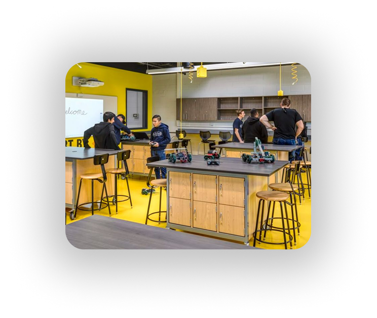
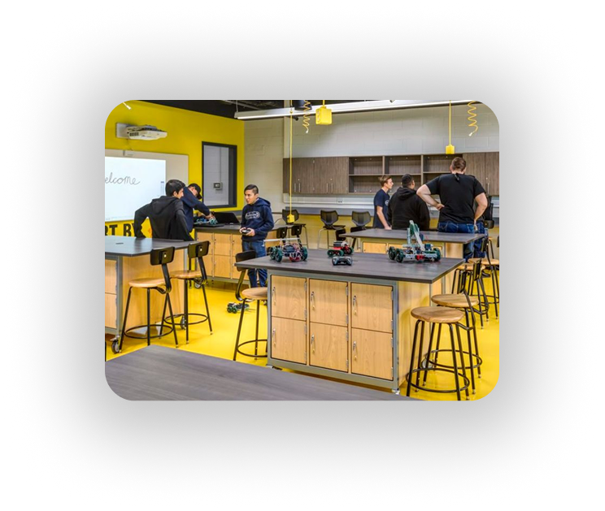

Já imaginou criar e programar seus próprios robôs? Nas nossas aulas de robótica, você aprende de forma divertida e prática, desenvolvendo criatividade, raciocínio lógico e habilidades para o futuro!


 



Este foi um projeto realizado pela turma do Professor Leandro onde os alunos desenvolveram um carrinho que além de seguir perfeitamente um percursos pré programado, tenta expressar emoções através de uma tela implantada nele.
Um companheiro para sua corrida diária.

Este foi um projeto desenvolvido pela turma do professor Fabio, apesar de sua aparência futurista, seu conceito é simples, sua única funcionalidade é ascender a pequena lâmpada embutida nele, sua carcaça foi modelada e impressa pela professor a partir das exigências dos alunos, onde agora esse robô é o mais novo mascote da turma 2°B, chamado Thomas.

Este foi um trabalho realizado de nosso aluno Cauã a mando da professora Nivia, este pequeno robô tem a finalidade de apresentar a temperado e umidade em que o solo se encontra, o principal intuito do circuito é saber a hora exata em que devemos regar nossas plantas.